模型：/home/work/opa_common/zhanghaoran/ft_ocr_v6/output/PP-OCRv6_overlay_business6k_continue_v2_b20_det/best_accuracy；配置：/home/work/opa_common/zhanghaoran/ft_ocr_v6/configs/PP-OCRv6_overlay_business_split_synth_v3_from_v1continuebest_b20_det.yml；后处理：thresh=0.15，box_thresh=0.4，unclip_ratio=1.8。
判断逻辑：如果 GT 区域 max/p90/二值覆盖 很低，说明模型概率图没有激活水印；如果二值覆盖有但轮廓 score 低，说明被 box_thresh 过滤；如果有通过轮廓但最终 IoU 低，说明响应碎片化或框覆盖不完整。
GT=1，final pred=1。绿色=GT，橙色=最终预测，轮廓图里红色=被后处理过滤，绿色=通过 box score。
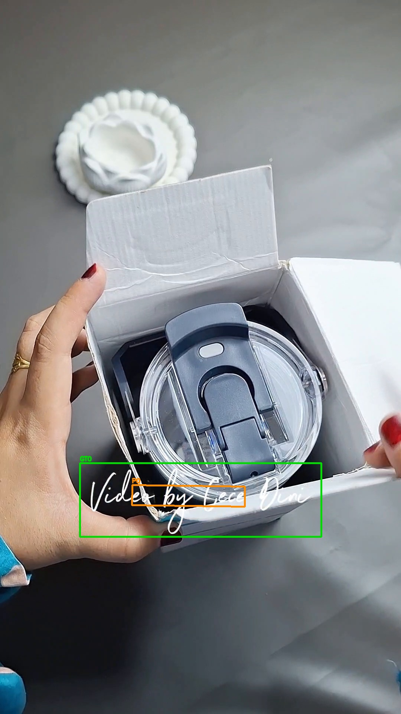
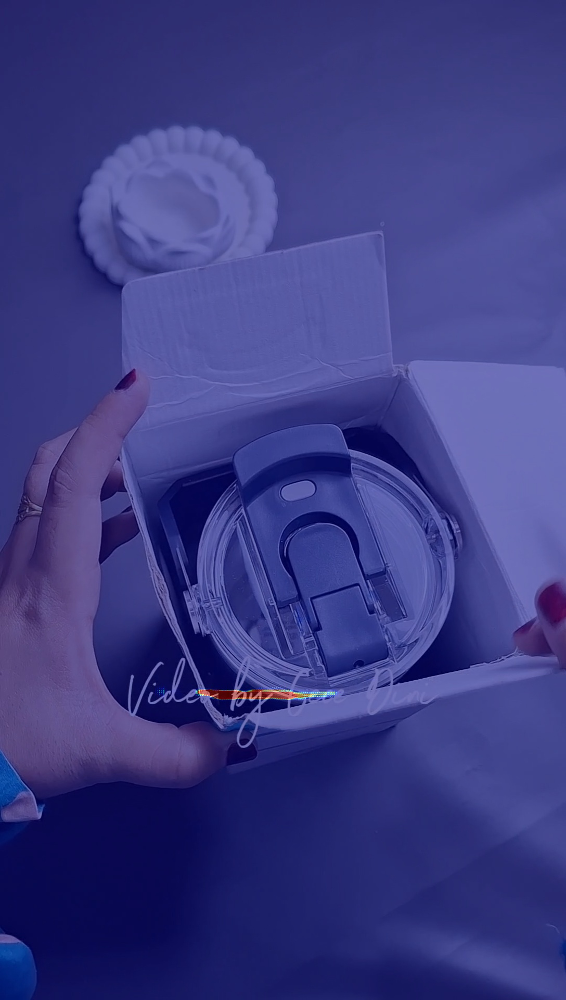
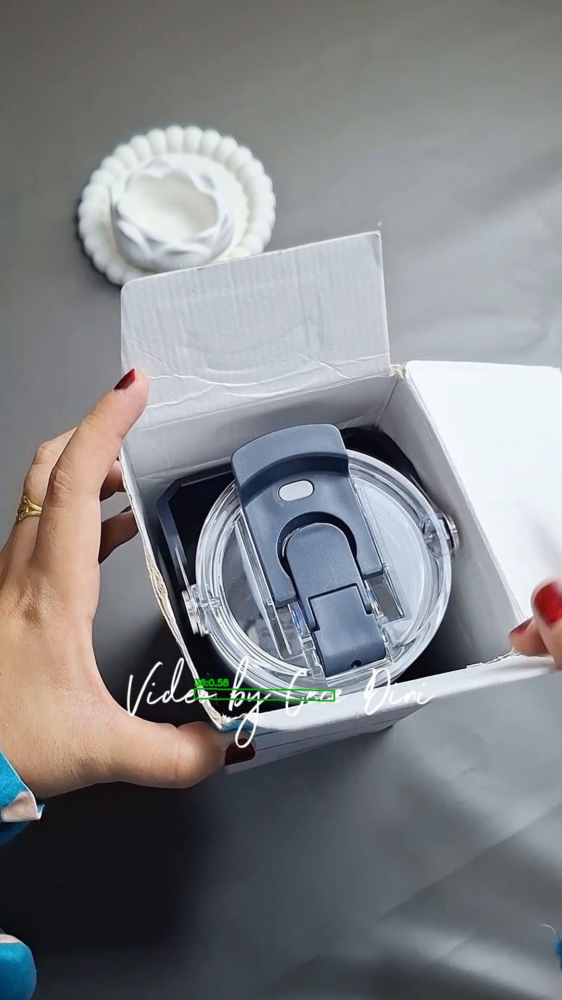
| # | text | mean | p90 | max | 二值覆盖 | 最终框 best IoU |
|---|---|---|---|---|---|---|
| 0 | Video by Cece Dini | 0.026 | 0.001 | 0.997 | 3.3% | 0.129 |
| contour | status | score | short side |
|---|---|---|---|
| 36 | pass_score | 0.582 | 19.7 |
| 0 | drop_small | 0.000 | 0.0 |
| 1 | drop_small | 0.000 | 0.0 |
| 2 | drop_small | 0.000 | 0.0 |
| 3 | drop_small | 0.000 | 0.0 |
| 4 | drop_small | 0.000 | 0.0 |
| 5 | drop_small | 0.000 | 0.0 |
| 6 | drop_small | 0.000 | 0.0 |
| 7 | drop_small | 0.000 | 0.0 |
| 8 | drop_small | 0.000 | 0.0 |
| 9 | drop_small | 0.000 | 1.4 |
| 10 | drop_small | 0.000 | 1.4 |
GT=3，final pred=2。绿色=GT，橙色=最终预测，轮廓图里红色=被后处理过滤，绿色=通过 box score。
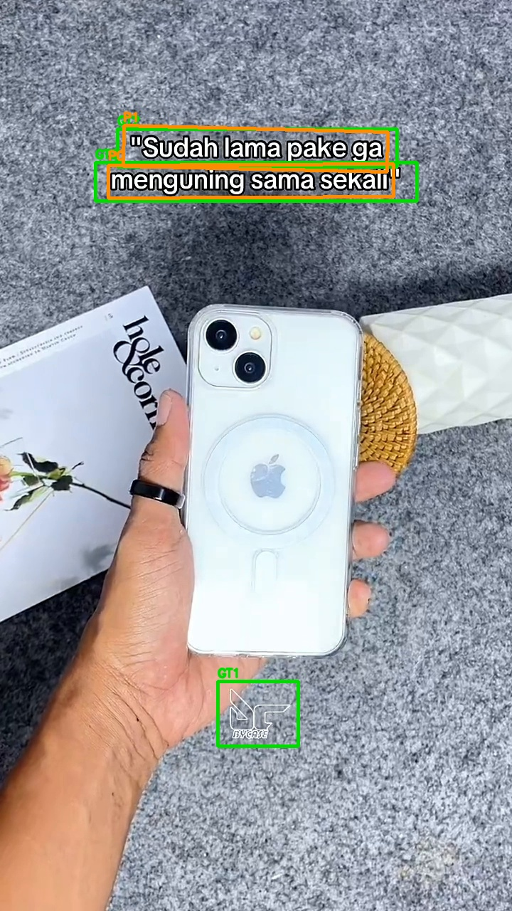
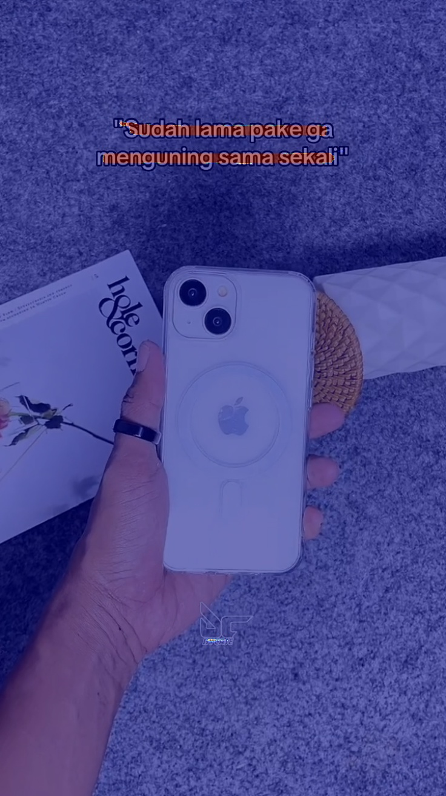
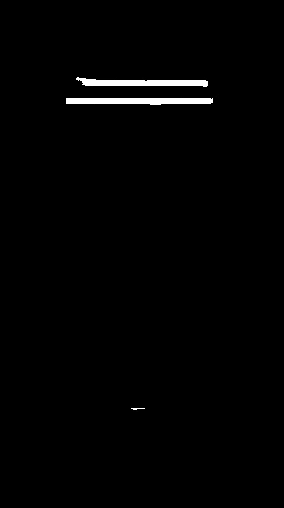
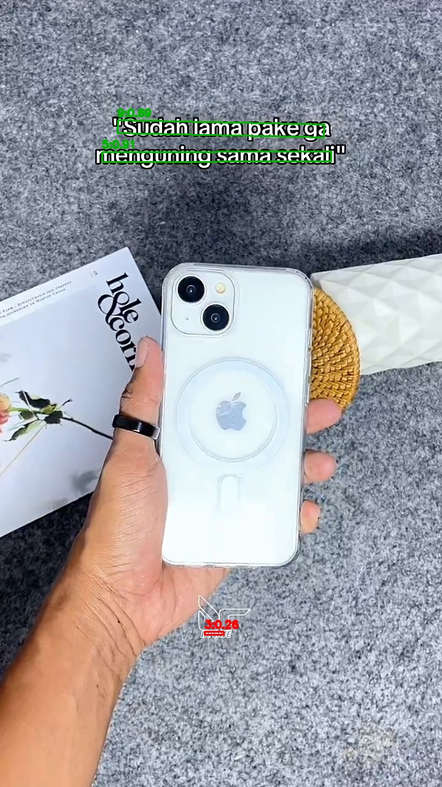
| # | text | mean | p90 | max | 二值覆盖 | 最终框 best IoU |
|---|---|---|---|---|---|---|
| 0 | Sudah lama pake ga menguning sama sekali | 0.235 | 1.000 | 1.000 | 23.8% | 0.758 |
| 1 | NVCASE | 0.005 | 0.001 | 0.962 | 1.0% | 0.000 |
| 2 | Sudah lama pake ga menguning sama sekali | 0.242 | 1.000 | 1.000 | 24.7% | 0.861 |
| contour | status | score | short side |
|---|---|---|---|
| 5 | pass_score | 0.907 | 16.8 |
| 9 | pass_score | 0.690 | 21.5 |
| 3 | drop_box_score | 0.259 | 5.0 |
| 0 | drop_small | 0.000 | 1.4 |
| 1 | drop_small | 0.000 | 0.0 |
| 2 | drop_small | 0.000 | 1.4 |
| 4 | drop_small | 0.000 | 0.0 |
| 6 | drop_small | 0.000 | 0.0 |
| 7 | drop_small | 0.000 | 1.4 |
| 8 | drop_small | 0.000 | 1.4 |
GT=3，final pred=4。绿色=GT，橙色=最终预测，轮廓图里红色=被后处理过滤，绿色=通过 box score。
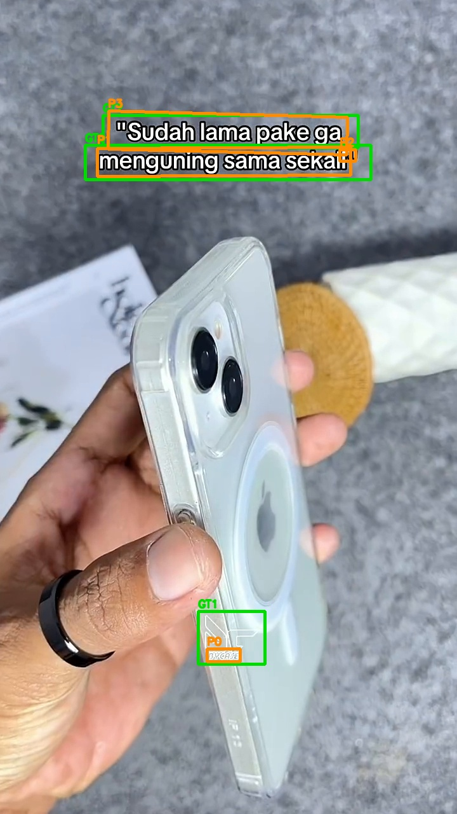
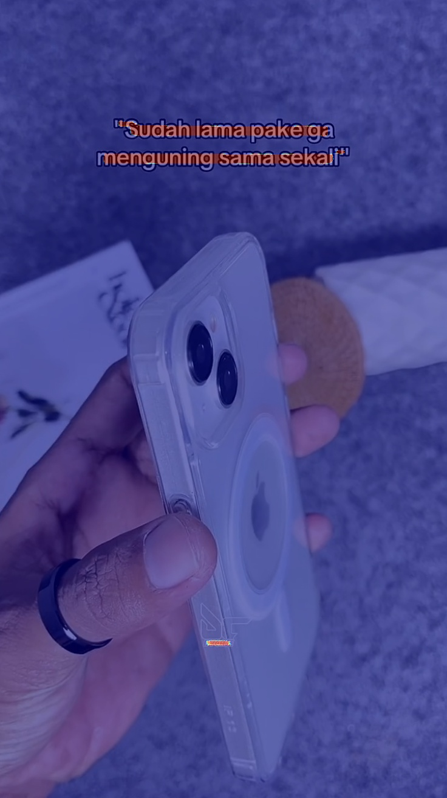
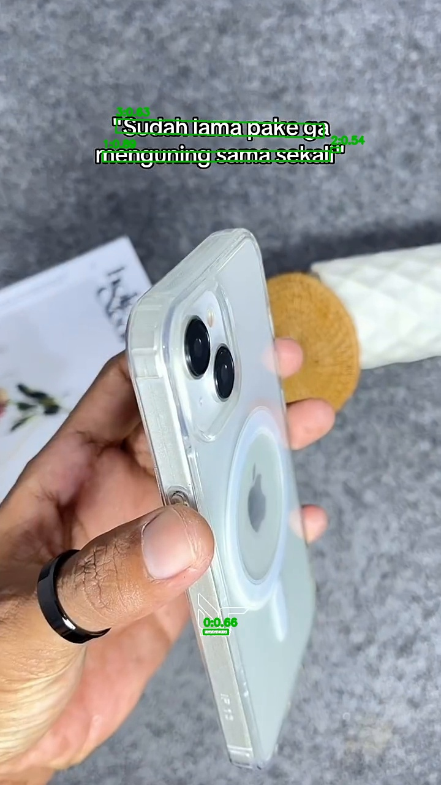
| # | text | mean | p90 | max | 二值覆盖 | 最终框 best IoU |
|---|---|---|---|---|---|---|
| 0 | Sudah lama pake ga menguning sama sekali | 0.233 | 1.000 | 1.000 | 23.7% | 0.726 |
| 1 | NVCASES | 0.027 | 0.000 | 0.990 | 3.4% | 0.125 |
| 2 | Sudah lama pake ga menguning sama sekali | 0.242 | 1.000 | 1.000 | 24.6% | 0.799 |
| contour | status | score | short side |
|---|---|---|---|
| 1 | pass_score | 0.888 | 16.7 |
| 0 | pass_score | 0.659 | 8.0 |
| 3 | pass_score | 0.634 | 22.6 |
| 2 | pass_score | 0.543 | 8.0 |
GT=3，final pred=3。绿色=GT，橙色=最终预测，轮廓图里红色=被后处理过滤，绿色=通过 box score。
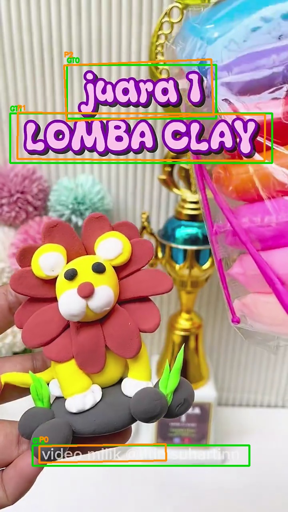
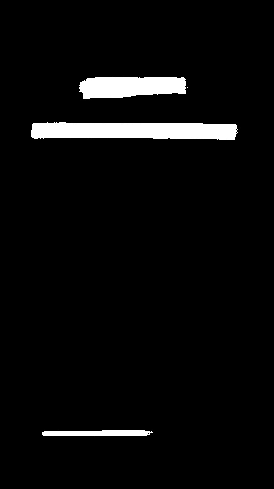
| # | text | mean | p90 | max | 二值覆盖 | 最终框 best IoU |
|---|---|---|---|---|---|---|
| 0 | juara 1 | 0.262 | 1.000 | 1.000 | 26.9% | 0.895 |
| 1 | LOMBA CLAY | 0.262 | 1.000 | 1.000 | 26.8% | 0.878 |
| 2 | video milik @titin suhartinn | 0.133 | 0.992 | 1.000 | 14.0% | 0.458 |
| contour | status | score | short side |
|---|---|---|---|
| 28 | pass_score | 0.885 | 44.2 |
| 44 | pass_score | 0.818 | 57.8 |
| 9 | pass_score | 0.793 | 15.5 |
| 0 | drop_small | 0.000 | 1.4 |
| 1 | drop_small | 0.000 | 1.4 |
| 2 | drop_small | 0.000 | 1.4 |
| 3 | drop_small | 0.000 | 1.4 |
| 4 | drop_small | 0.000 | 1.4 |
| 5 | drop_small | 0.000 | 1.4 |
| 6 | drop_small | 0.000 | 0.0 |
| 7 | drop_small | 0.000 | 2.0 |
| 8 | drop_small | 0.000 | 0.0 |
GT=1，final pred=0。绿色=GT，橙色=最终预测，轮廓图里红色=被后处理过滤，绿色=通过 box score。
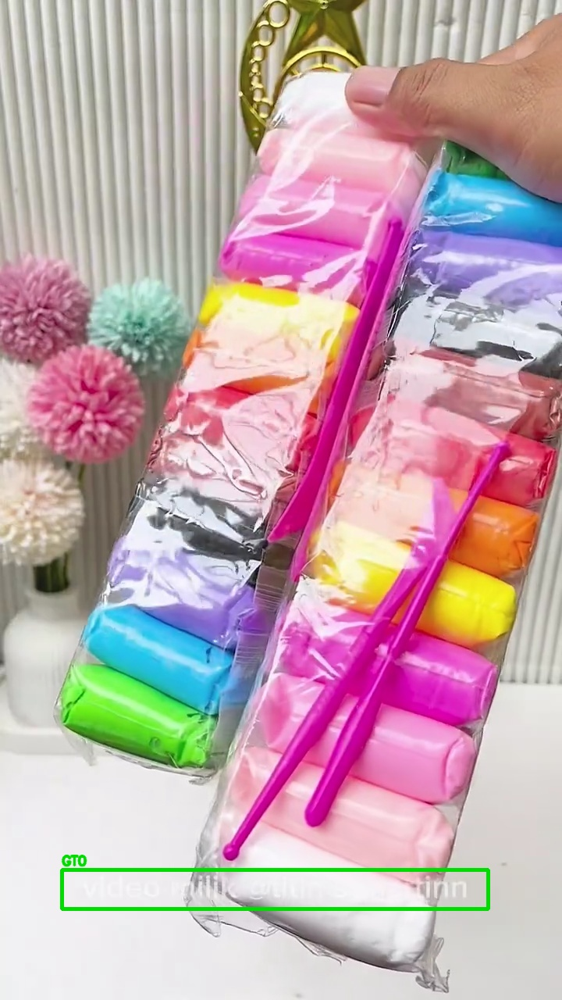
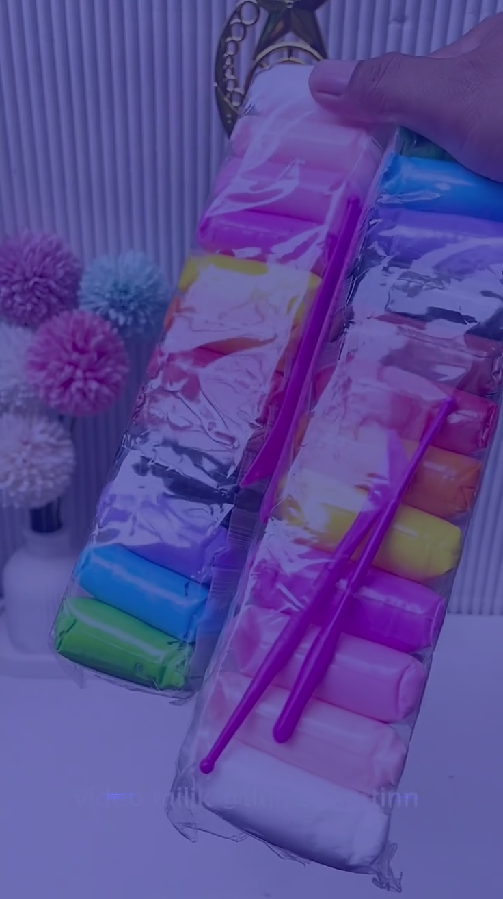
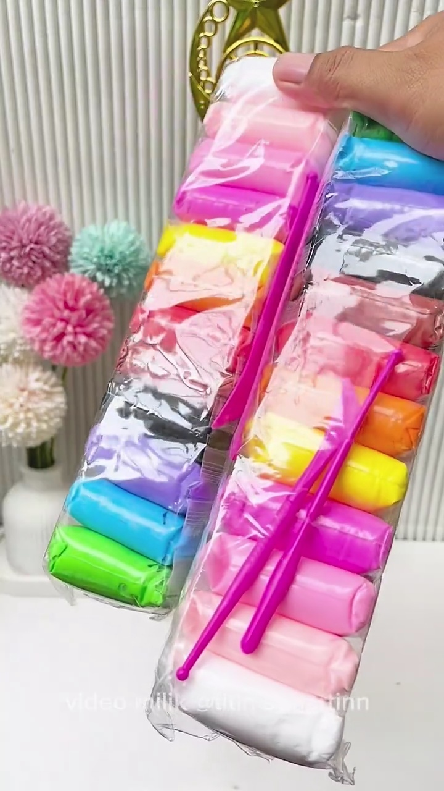
| # | text | mean | p90 | max | 二值覆盖 | 最终框 best IoU |
|---|---|---|---|---|---|---|
| 0 | video milik @titin suhartinn | 0.001 | 0.001 | 0.174 | 0.0% | 0.000 |
| contour | status | score | short side |
|---|---|---|---|
| 0 | drop_small | 0.000 | 0.0 |
| 1 | drop_small | 0.000 | 0.0 |
| 2 | drop_small | 0.000 | 0.0 |
| 3 | drop_small | 0.000 | 0.0 |
GT=4，final pred=5。绿色=GT，橙色=最终预测，轮廓图里红色=被后处理过滤，绿色=通过 box score。
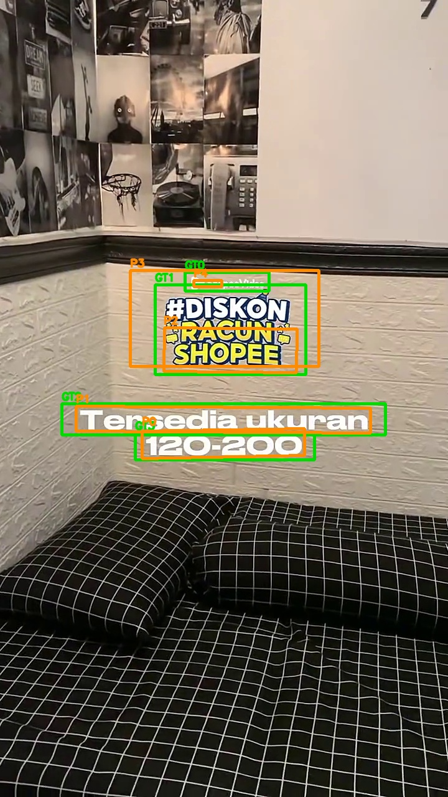
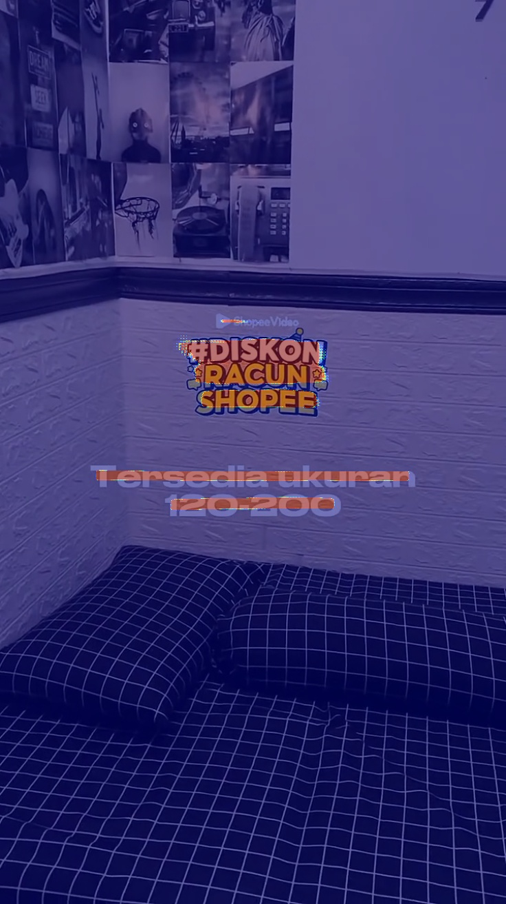
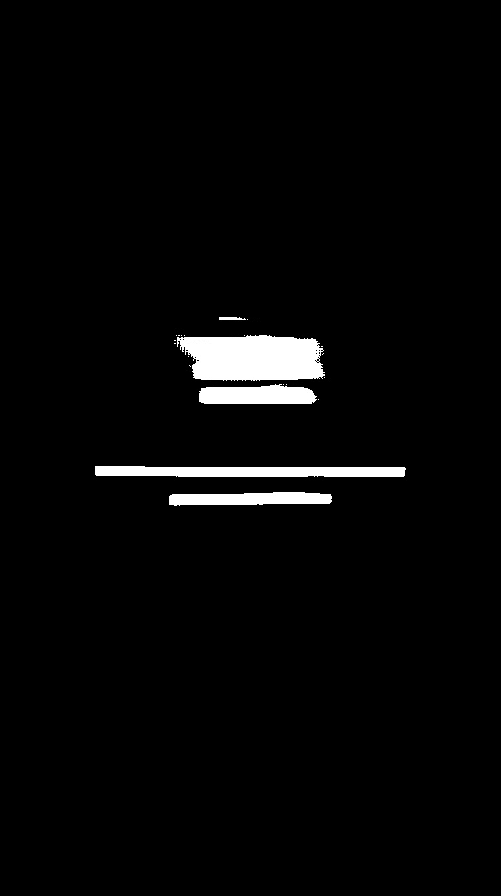
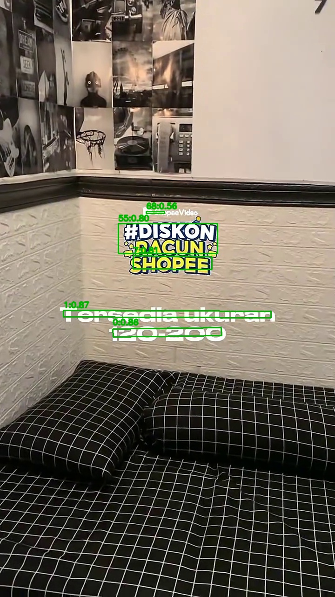
| # | text | mean | p90 | max | 二值覆盖 | 最终框 best IoU |
|---|---|---|---|---|---|---|
| 0 | ShopeeVideo | 0.027 | 0.003 | 0.986 | 3.5% | 0.120 |
| 1 | Tersedia ukuran | 0.426 | 1.000 | 1.000 | 44.2% | 0.638 |
| 2 | 120-200 | 0.223 | 1.000 | 1.000 | 22.8% | 0.731 |
| 3 | 120-200 | 0.283 | 1.000 | 1.000 | 29.1% | 0.738 |
| contour | status | score | short side |
|---|---|---|---|
| 1 | pass_score | 0.872 | 14.5 |
| 0 | pass_score | 0.864 | 17.1 |
| 7 | pass_score | 0.807 | 27.8 |
| 55 | pass_score | 0.801 | 66.0 |
| 68 | pass_score | 0.564 | 4.0 |
| 2 | drop_small | 0.000 | 0.0 |
| 3 | drop_small | 0.000 | 1.4 |
| 4 | drop_small | 0.000 | 2.1 |
| 5 | drop_small | 0.000 | 0.0 |
| 6 | drop_small | 0.000 | 0.0 |
| 8 | drop_small | 0.000 | 0.0 |
| 9 | drop_small | 0.000 | 0.0 |